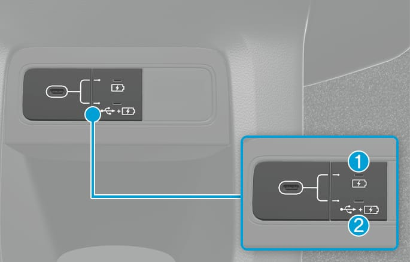
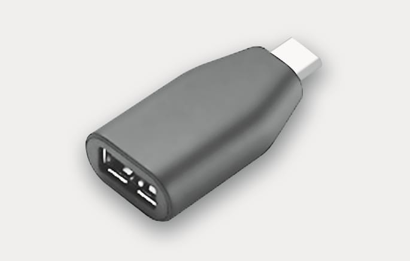

USB 단자
MP3 플레이어, USB 메모리 등 미디어 파일 저장 장치를 차량에 연결한 후 인포테인먼트 시스템으로 재생할 수 있습니다.
-
소형 전자 제품 연결해 충전할 수도 있습니다.

2C_UBSPort
시동이 켜진 상태에서 USB 단자 전환 버튼을 누르십시오.
-
버튼을 누를 때마다 충전 모드(1)와 미디어 연결 및 충전 모드(2)가 서로 전환되며 해당 모드의 표시등이 켜집니다.
-
전자 기기를 충전하려면 충전 모드(1)를 선택하십시오.
-
미디어 연결 과 충전이 동시에 필요한 경우 미디어 연결 및 충전 모드(2)를 선택하십시오.
-
-
충전 상태는 연결된 기기에서 확인할 수 있습니다.
-
일부 기기의 경우 USB 충전 기능이 지원되지 않을 수 있습니다.
-
외부 미디어 기기를 다용도 소켓에 연결해 사용할 때 전자파 간섭으로 인해 소음이 발생할 수 있습니다. 이런 경우, 기기와 함께 제공되는 외부 전원을 사용하십시오.
-
USB-A 타입 데이터 기기나 메모리를 차량에 연결해 사용하려는 경우, 차량에 맞는 순정 C to USB-A 변환 어댑터를 사용하십시오. 과전류 방지 및 안정화를 위한 장치가 내장되어 있지 않은 제품이나 규격에 맞지 않는 제품을 사용하는 경우, 차량의 USB 단자 및 연결된 기기가 손상될 수 있습니다.

2C_USBConvertingAdapter
-
품질이나 성능이 부적합한 부품 사용으로 인한 USB 단자 및 인포테인먼트 시스템 고장 발생 시 보증기간에 해당하더라도 보증수리를 제공하지 않습니다. 순정 부품은 현대자동차가 품질과 성능을 보증하는 부품입니다.